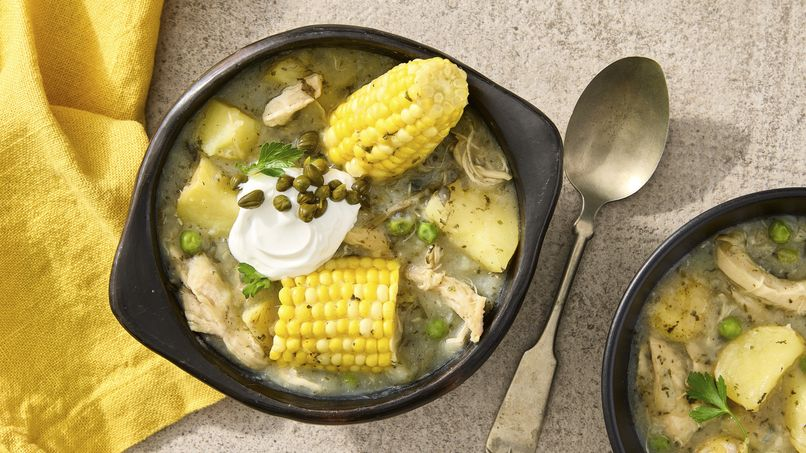

Ajiaco!

El ajiaco es una preparacion a base de papas que se considero uno de los
platos mas tipicos de la ciudad de Bogota, esta sopa, tiene como principal
ingrediente la guasca que es una hierba que le da un sabor caracteristico
al igual que las alcaparras y crema de leche que la hacen una preparacion
unica.
Ingredientes
- 8 tazas de agua
- (4 a 6 oz cada una) pechugas de pollo deshuesadas y sin piel
- 1 taza de guascas secas
- 2 libras de papas rojas, peladas y cortadas en trozos grandes
- 1 cebolla mediana, picada
- 2 dientes de ajo
- 1 1/2cucharadas de sal
- 1 libra de papas Yukon, cortadas en trozos de 2 pulgadas
- 1 cubito de caldo de pollo
-
3 mazorcas grandes de maíz dulce fresco, limpias, cortadas por la mitad
- 1/2 taza de chicharos congelados, descongelados
Preparacion
-
En una olla grande, agrega el agua, el pollo y 1/2 taza de guascas. Deja
hervir a fuego lento durante aproximadamente 40 minutos. Una vez que el
pollo esté cocido, retírela del agua y colóquela en una tabla de cortar.
Reserva el líquido de cocción. Use dos tenedores para separar el pollo
en trozos grandes del tamaño de un bocado. Cubre con papel de aluminio
para mantener el calor.
-
En la misma agua que cocinaste el pollo, agrega las papas rojas, la
cebolla, el ajo y la sal. Cocina por aproximadamente 2 horas o hasta que
las papas esten suaves. Agrega agua adicional según sea necesario para
cocinar las papas por completo y aún así mantener jugosa la base del
guiso.
-
Agrega el pollo, las papas Yukon y el caldo de pollo a la mezcla de
papas. Revuelve con cuidado y deja hervir a fuego lento durante 50
minutos o hasta que las papas Yukon estén tiernas. Agrega el maíz y
cocina por 10 minutos más.
-
Agrega la 1/2 taza restante de las guascas y los chicharos. Cocina por 5
minutos más o hasta que esté completamente caliente.
-
Divide el guiso de manera uniforme entre 6 tazones, asegurándote que
cada tazón tenga un trozo de maíz. Adorne al gusto con perejil, crema
agria y alcaparras.
volver